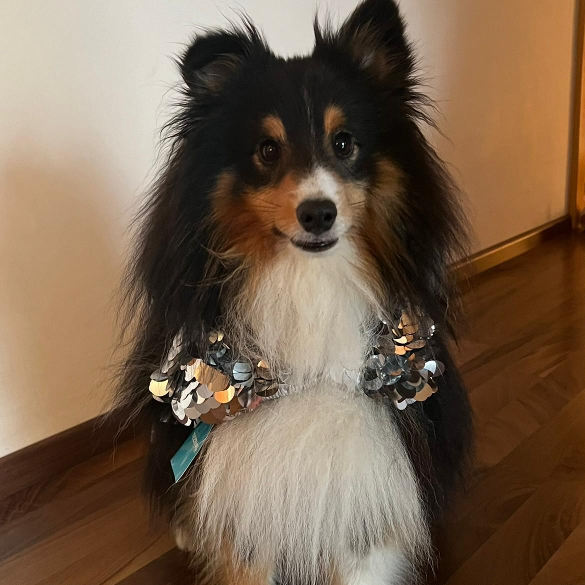
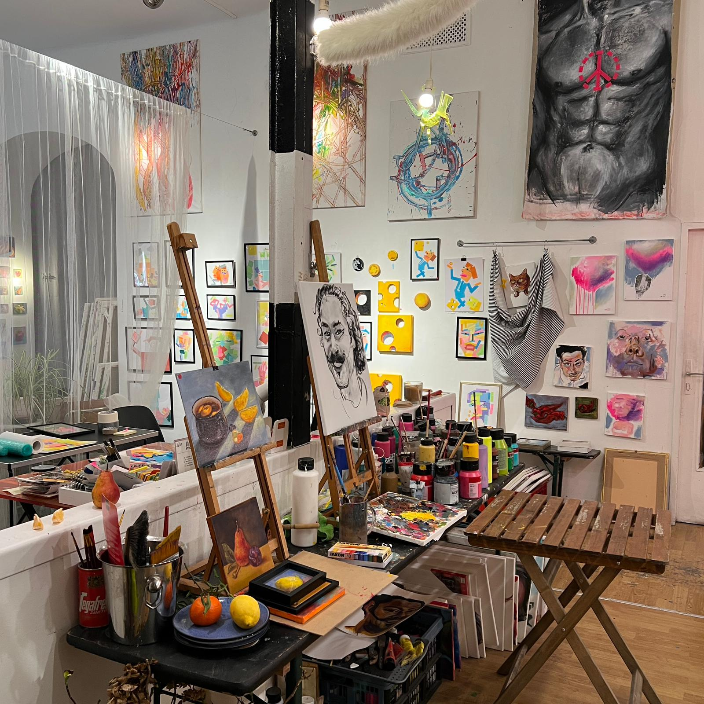
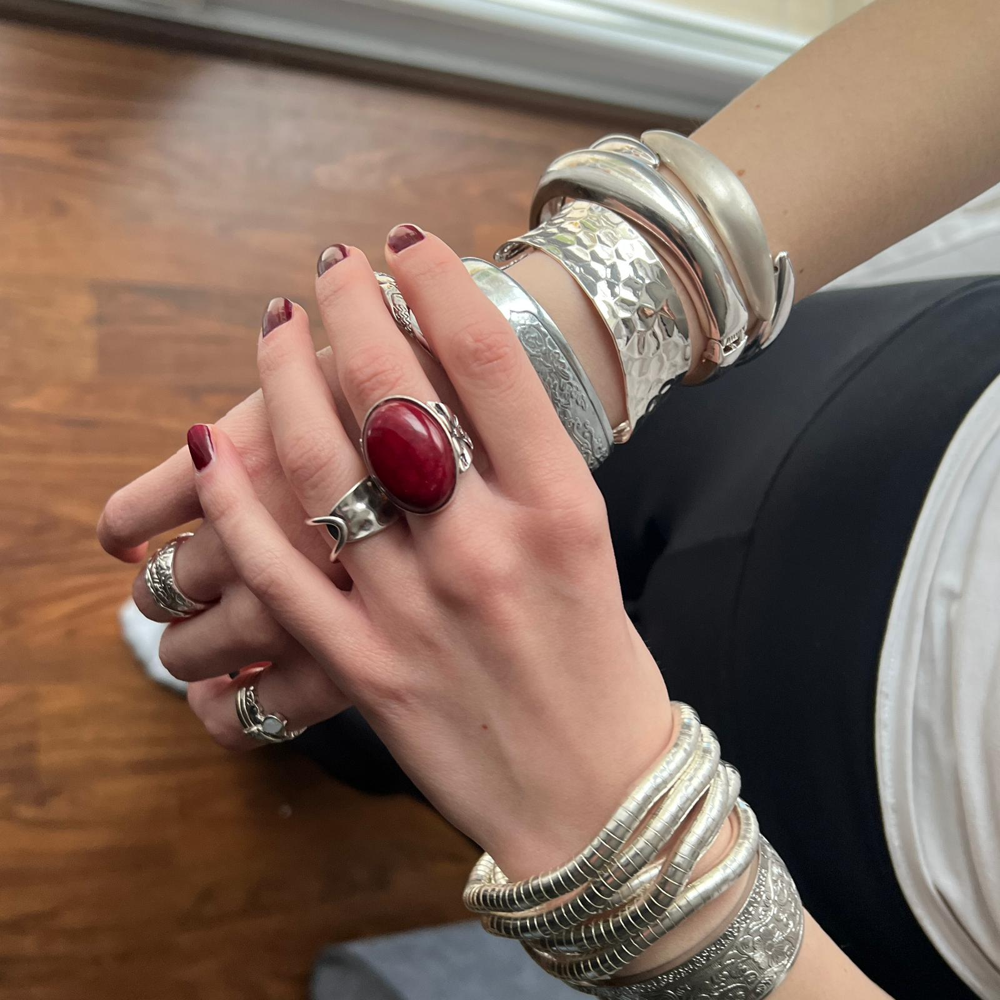

THERESA

Mein Hund: Ich heiße Theresa Schmidt, bin 20 Jahre alt und komme aus Dachau. In meiner Freizeit verbringe ich viel Zeit mit meinem Sheltie Vito, mit dem ich gerne spazieren gehe und spiele. Ich genieße es, draußen in der Natur zu sein und mit ihm Zeit zu verbringen. Vito ist immer voller Energie und macht jeden Spaziergang besonders. Diese gemeinsame Zeit ist für mich ein wichtiger Ausgleich zum Alltag.

Mein Hobby Kunst & Pinterest: Ein weiteres Hobby von mir ist Kunst, besonders das Malen auf Leinwand, was mir hilft, kreativ zu sein und zu entspannen. Ich finde es faszinierend, mit Farben und Formen zu experimentieren und eigene Werke zu schaffen. Eine App, die ich gerne vorstellen würde, ist Pinterest, eine Plattform, auf der Nutzer Ideen und Inspirationen teilen können. Auf Pinterest finde ich unendlich viele kreative Anregungen, von Kunst über DIY-Projekte bis hin zu Rezepten. Die App ist besonders hilfreich, um neue Techniken zu entdecken und meine eigenen Projekte zu planen.

Schmuck: Mein letztes Hobby ist Schmuck, besonders Armreifen und Ringe, die ich gerne trage. Ich liebe es, mich mit Schmuck zu umgeben, da er jedes Outfit sofort aufwertet. Besonders gerne trage ich Silberschmuck, weil er zeitlos und vielseitig ist. Schmuck lässt mich meinen persönlichen Stil unterstreichen und gibt mir das Gefühl, mich selbst auszudrücken. Ich fühle mich viel wohler, wenn ich Schmuck trage, da er mir einfach mehr Selbstbewusstsein gibt.